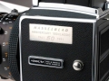

枫叶枫叶2009-04-16 09:574.33 分
操作性 4.00功能性 4.50美观性 5.00趣味性 5.00耐用性 5.00性价比 2.50
panchro2009-03-27 17:303.83 分
操作性 3.50功能性 3.50美观性 5.00趣味性 4.00耐用性 4.50性价比 2.50
猪猪棒2008-07-24 16:264.67 分
操作性 4.50功能性 4.50美观性 5.00趣味性 5.00耐用性 5.00性价比 4.00
强力变焦2007-08-19 11:144.67 分
操作性 4.00功能性 5.00美观性 5.00趣味性 5.00耐用性 5.00性价比 4.00
Quins2006-06-15 11:504.75 分
操作性 4.50功能性 4.00美观性 5.00趣味性 5.00耐用性 5.00性价比 5.00
猪头唛2006-05-31 21:144.5 分
操作性 4.50功能性 4.50美观性 4.50趣味性 4.50耐用性 4.50性价比 4.50
山雨愈来2006-04-14 19:244.83 分
操作性 5.00功能性 5.00美观性 4.50趣味性 4.50耐用性 5.00性价比 5.00
快门画笔鼠标2005-11-15 16:214.67 分
操作性 4.50功能性 4.50美观性 5.00趣味性 5.00耐用性 5.00性价比 4.00

阿番2003-07-25 16:124.58 分
操作性 4.00功能性 4.50美观性 5.00趣味性 5.00耐用性 5.00性价比 4.00
狼族盟约2003-07-17 08:374.75 分
操作性 4.50功能性 5.00美观性 5.00趣味性 5.00耐用性 5.00性价比 4.00